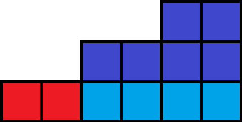
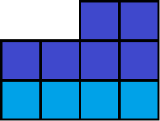

计数类 DP
问题特征
目标：求解满足特定约束的「方案数」或「权值和」
典型场景：组合计数、划分问题、排列限制、集合约束等
关键要求：避免重复计数，保证不重不漏（组合问题需注意无序性）
状态设计
有模板吗？没有。我们的计数类 DP 很灵活，没有一个固定的板子，但是却有一个大致的思想。
核心状态：$dp_{n,k}$ 表示前 $n$ 个元素满足性质 $k$ 的方案数
性质 $k$ 的灵活性：
-
数值型：和/最大值/乘积为 $k$（如背包问题）
-
结构型：子集大小/序列长度/树节点层级为 $k$
-
你甚至可以看到进位/位运算型：二进制表示中 1 的数量（如例题「数列」）
例题
我们直接在例题中了解，感受计数类 DP 吧。
数的划分
给定一个正整数 $n$，求有多少个把 $n$ 划分成 $k$ 个正整数的和的方案，位置调换视为相同的划分方案。
我们考虑设 $dp_{n,k}$ 表示把 $n$ 分成 $k$ 个非零的数的方案数。
显然，我们考虑边界情况：$\left{\begin{matrix}dp_{n,n}=1\dp_{n,k}=0(k>n)\end{matrix}\right.$。
其余情况我们分讨：
-
如果这次划分有 $1$：那么我们减去一个 $1$，从 $dp_{n-1,k-1}$ 转移而来。
-
如果没有，那就相当于所有划分出来的数都大于 $1$，我们将他们全都减去 $1$，从 $dp_{n-,k}$ 转移而来。
所以，我们这样显然会满足不漏所有情况。
来几张图帮助理解吧：

假设这是我们的状态，我们首先减去两次红色的 $1$。

接着，我们看见所有的都大于 $1$，我们集体减去一层（浅蓝色）。
现在，我们一直这么做，最终一定会推到 $dp_{1,1}$。
最终，状态转移方程为： $dp_{i,x}=dp_{i-1,x-1}+dp_{i-x,x}$。
平衡
给定一个平衡的杠杆（有 $n$ 个砝码），你需要从上面拿下 $k$ 块砝码使得其仍然保持平衡，求方案数模 $p$。
$T \le 20，1 \le n \le 10000，1 \le k \le 10，2 \le p \le 10000$
类似于整数划分，我们可以设 $f_{i,j}$ 为用 $j$ 个数拆分 $i$ 这个数的方案数（这 $j$ 个数之间不能重复），同样的，对于每一个数的拆分方式，我们可以分为最小值为 $1$ 和不为 $1$ 的两种，转移分别是：
- 最小值为 $1$ ：$f_{i,j}$ 可以从 $f_{i−j,j−1}$ 转移过来（因为已知这几个数之间不能重复，那么最小值为 $1$，这几个数中就肯定只有一个 $1$，我们可以给每个数都减掉一个 $1$，剩下的是 $j−1$ 个数，这样就可以从 $f_{i−j,j−1}$ 这个状态转移到 $f_{i,j}$ 了。)
- 最小值不为 $1$ ：$f_{i,j}$ 可以从 $f_{i−j,j}$ 转移过来，理由和有重复的划分相同。
则转移方程为：$f_{i,j}=f_{i−j,j−1}+f_{i−j,j}$，最后答案为 $f_{(n+1)×k,k}$。
剩下要注意的事情就是要注意处理边界，因为我们要处理出 $k$ 个数的和为 $(n+1)×k$ 的方案数，而杠杆长度只有 $2\times n+1$，所以有些方案是不合法的，需要减掉。
数列
给定数列 $\left{a_{i}\right}$，满足 $\forall a_{i} \in{x \in \mathbb{Z} \mid 0 \leq x \leq m}$。若 $\sum_{i=1}^{n} 2^{a_{i}}$ 的二进制中 $1$ 的个数不超过 $k$，则为一种合法的方案。求 $\sum\left(\prod_{i=1}^{n} v_{a_{i}}\right)$。
考虑一种 $dp$ ，将所有相同指数的数（$a_i$ 相同）一次性加入到 $S$ 中。不难想到， $dp$ 应该从低位往高枚举，因为低位的进位会影响高位，而高位则对低位无影响，满足 $dp$ 的无后效性，时间复杂度 $\Theta\left(m \times n^{4}\right)$ 。
设 $dp_{x,y,a,b}$ 表示枚举到 $2^x$，已用了 $y$ 个数，$a$ 个低位 $1$，$b$ 个高位 $1$。
则状态转移方程为：
$$
d_{x,y,a,b}=\sum_{i=0}^{n-y} dp_{x+1,y+i,a+((b+i)\bmod 2),\left\lfloor\frac{b+i}{2}\right\rfloor} \times v_{x}^{i} \times \operatorname{C}_{n-y}^{i}
$$
其中 $i$ 表示在剩下 $n-y$ 个位置中放入 $i$ 个 $2^x$，权值的幂和组合数均可预处理。
Deepseek 给出的详解
数列
问题核心
给定数列 ${a_i}$，满足 $a_i \in [0, m]$。要求计算所有满足 $\sum_{i=1}^n 2^{a_i}$ 的二进制表示中 1 的个数 $\leq k$ 的方案，并求这些方案的权值乘积 $\prod_{i=1}^n v_{a_i}$ 之和。
关键挑战
- 指数级数值范围：$2^{a_i}$ 的和可能极大，无法直接计算
- 二进制约束：需统计二进制中 1 的个数
- 进位影响：低位的进位会改变高位的值
- 组合爆炸：$n$ 个位置的选择方案呈指数级增长
算法设计：四维动态规划
状态定义
$dp_{x,y,a,b}$ 表示：
- $x$：当前处理到指数 $2^x$（从低位向高位推进）
- $y$：已使用的数字个数（$0 \leq y \leq n$）
- $a$：低位已确定的二进制 1 的个数（$0 \leq a \leq k$）
- $b$：向当前位的进位值（$0 \leq b \leq n$）
状态含义：处理完所有 $<x$ 的指数位后，已用 $y$ 个数字，低位贡献了 $a$ 个 1，当前位接收 $b$ 的进位时的方案权值和。
状态转移方程
$$ dp_{x+1,y+i,a+[(b+i)\bmod 2],\lfloor\frac{b+i}{2}\rfloor} \gets \sum_{i=0}^{n-y} \left[ dp_{x,y,a,b} \times v_x^i \times \binom{n-y}{i} \right] $$
转移过程分解：
- 枚举选择：在剩余 $n-y$ 个位置中选 $i$ 个放置 $2^x$
- 计算当前位总和：$t = b + i$（进位 + 新加数字）
- 确定二进制位：
- 当前位值：$t \mod 2$（0 或 1）
- 新进位：$\lfloor t/2 \rfloor$
- 更新状态：
- $a' = a + (t \mod 2)$（累计 1 的个数）
- $b' = \lfloor t/2 \rfloor$（向高位进位）
- $y' = y + i$（更新已用数字数）
辅助计算
- 组合数：$\binom{n-y}{i}$ 表示从剩余位置选 $i$ 个的方案数
- 权值幂：$v_x^i$ 表示 $i$ 个指数 $x$ 的权值乘积
- 预处理：
- 组合数表：$C_{i,j}$ 计算 $0 \leq i,j \leq n$
- 权值幂表：$powv_{x,i} = v_x^i \mod p$
算法流程
初始化
dp[0][0][0][0] = 1 # 初始状态：未处理任何位，未用数字，无进位
M = m + ceil(log2(n)) + 10 # 最大指数范围（考虑进位传播）
动态规划主循环
for x in range(0, M+1): # 指数从低到高
for y in range(0, n+1): # 已用数字数
for a in range(0, k+1): # 已累计1的个数（剪枝：a>k跳过）
for b in range(0, n+1): # 当前进位值
if dp[x][y][a][b] == 0: continue
if x <= m: # 正常指数范围
for i in range(0, n-y+1): # 枚举选择i个2^x
t = b + i
a_new = a + (t & 1) # 新增的二进制位
b_new = t >> 1 # 新进位
if a_new > k: continue # 可行性剪枝
# 计算转移量
term = dp[x][y][a][b]
term *= powv[x][i] # 权值乘积因子
term *= C[n-y][i] # 组合选择因子
dp[x+1][y+i][a_new][b_new] += term
else: # 超出m的范围（仅处理进位）
t = b
a_new = a + (t & 1)
b_new = t >> 1
if a_new <= k:
dp[x+1][y][a_new][b_new] += dp[x][y][a][b]
终止条件与答案收集
ans = 0
for a in range(0, k+1):
ans += dp[M+1][n][a][0] # 必须满足：所有数用完(y=n)+进位归零(b=0)
return ans
关键设计解析
-
低位到高位处理：
- 原因：进位只能从低位向高位传递
- 优势：自然处理进位链式反应，满足无后效性
- 示例：$2^0$ 位产生的进位影响 $2^1$ 位计算
-
进位状态 $b$ 的必要性：
- 记录未完成计算的进位值
- 示例：$3 \times 2^x = 2^x + 2^{x+1}$ 会产生进位
-
组合数 $\binom{n-y}{i}$ 的作用：
- 从剩余位置中选择 $i$ 个放置当前指数
- 示例：剩余 3 个位置时选 2 个放 $2^x$，有 $\binom{3}{2}=3$ 种方式
-
权值幂 $v_x^i$ 的整合：
- 指数相同的权值乘积合并计算
- 示例：3 个 $a_i=x$ 贡献 $v_x^3$
-
超指数范围处理：
- 当 $x > m$ 时只处理进位（$i=0$）
- 原因：$a_i$ 最大为 $m$，更高位无新数字
复杂度分析
- 时间复杂度：$\Theta(M \cdot n^3 \cdot k)$
- $M \approx m + \log n$（指数范围）
- $n^3$ 来自状态 $y,b$ 和转移枚举 $i$
- 空间复杂度：$\Theta(M \cdot n^2 \cdot k)$（可优化为滚动数组）
优化技巧
-
剪枝：
- $a > k$ 时直接跳过
- $b > n$ 的状态不可能存在（进位 $\leq n$）
-
滚动数组：
- 只需保存 $x$ 和 $x+1$ 两层状态
- 空间降为 $\Theta(n^2 \cdot k)$
-
预处理加速：
- 组合数 $O(n^2)$ 预处理
- 权值幂 $O(m \times n)$ 预处理
正确性验证
考虑 $n=2, m=1, k=1, v=[1,2]$ 的简化情况：
- 合法方案：$(a_1,a_2)=(0,0)$ 和 $(1,1)$
- $(0,0)$：$2^0+2^0=2$（二进制
10，1 个 1） - $(1,1)$：$2^1+2^1=4$（二进制
100，1 个 1）
- $(0,0)$：$2^0+2^0=2$（二进制
- 计算过程：
- $x=0$：选 $i=2$ 个 $2^0$ → $t=2, a_{new}=0+(0)=0, b_{new}=1$
- $x=1$：进位 $b=1$，选 $i=0$ → $t=1, a_{new}=0+1=1, b_{new}=0$
- 终止：$y=2, a=1, b=0$ → 贡献 $v_0^2 \times \binom{2}{2}=1$
- 总方案：$(0,0)$ 和 $(1,1)$ 各贡献 1，总和为 2，符合预期
总结
该设计通过四维 DP 状态：
- 按指数位从低到高推进
- 动态追踪进位和 1 的个数
- 组合数学整合相同指数的方案
- 权值乘积高效合并计算 完美解决了大数值范围下的二进制约束计数问题，体现了计数类 DP 处理高维状态和进位传递的精妙技巧。
Cowmpany Cowmpensation
树形结构，给每个节点分配权值（$val\isin[1,d]$），子节点的权值不能超过父亲节点的权值，问有多少种分配方案。
( $1\le n\le 3000,1\le d\le 10^9$ ).
首先，离散化。我们简单通过树形 $dp$ 求出当根节点权值分别为 $j$ 时的这棵树的答案。
首先，我们令 $f_{i,j}$ 为在 $i$ 的子树中，当 $i$ 的权值为 $j$ 时的方案数。
不难发现，我们对它进行前缀和，记作 $s_{i,j}=\sum_{k=1}^{j}f_{i,k}$，则 $f_{i,j}=\Pi_{(i,v)\isin \mathbb{E}}s_{v,j}$，$\Theta(n^2)$ 求出根节点答案。在下文中，我们使用 $f_i$ 代指 $f_{1,i}$。
显然，此时的 $f$ 并不是答案，因为我们可以最大值不为 $d$。
令 $g_i$ 为恰好用 $i$ 种颜色的方案数，简单容斥，得 $g_i=f_i-\sum_{j=1}^{i-1}\operatorname{C}_{i=1}^{i-j}\times g_j$。
显然，最后答案就是 $\sum_{i=1}^{\min(n,d)}\operatorname{C}_d^i\times g_i$。
通用优化技巧/易错点
涉及到区间求和的题目可以考虑前缀和/差分优化，组合数有的直接预处理就行，还有一个缩小数据范围的很有效的方法就是离散化。
至于易错点……别忘了取模，容斥要记得模夹模（a = (a % mod + mod) % mod），还有边界状态的设立，以及非最大/小题不仅要不漏更要不重。
最后，给出题单。